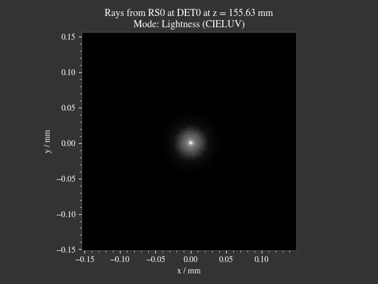
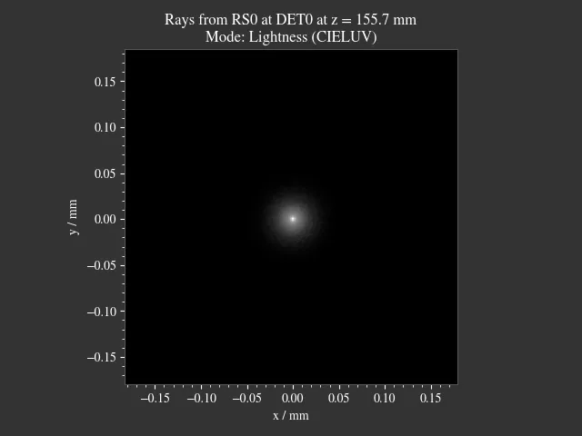
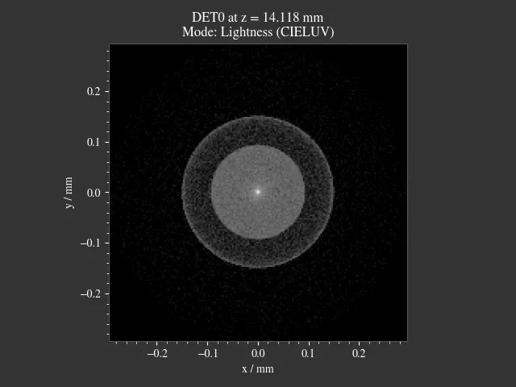
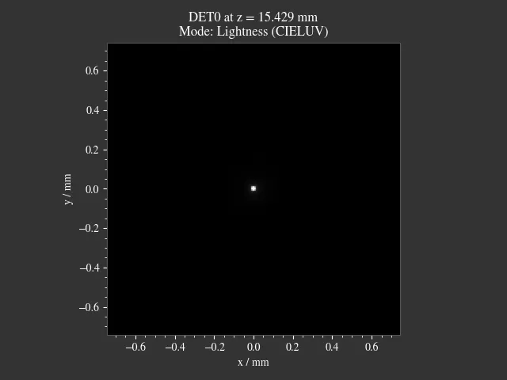
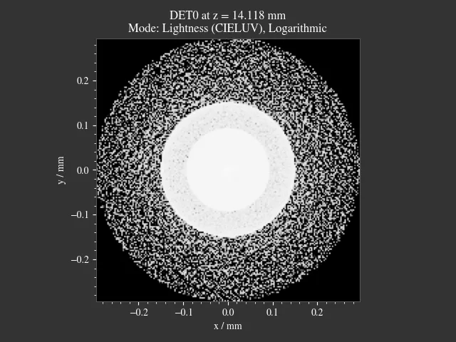
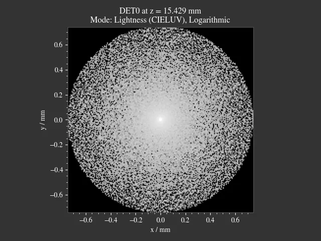
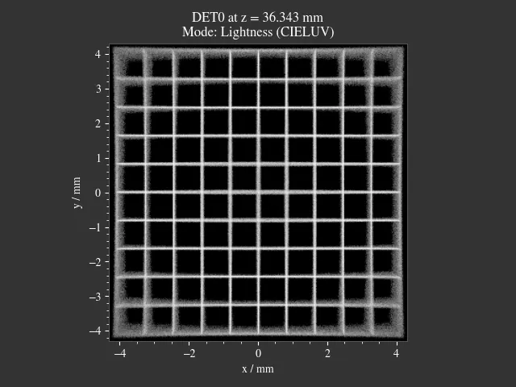
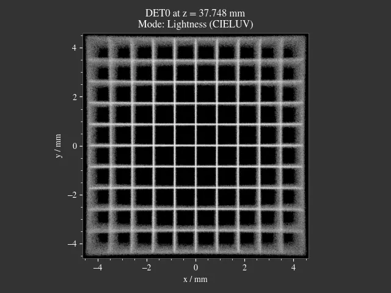

4.9. Focus Search#
4.9.1. Focus Modes#
The following focus methods are available:
RMS Spot Size |
minimal variance of the lateral ray position |
Irradiance Variance |
highest irradiance variance |
Image Sharpness |
sharpest edges for the whole image |
Image Center Sharpness |
sharpest edges in the center region of the image |
The methods use all available rays, for better results the scene should have been traced with much rays as possible. The methods are explained in more detail down below.
There are multiple applications for focus search, below you can find method recommendations.
- Case 1: Perfect, nearly ideal focal point
Examples: Focus of an ideal lens. Paraxial illumination of a real lens
Preferred methods: RMS Spot Size. Irradiance Variance is also suitable, but has worse performance.
Below you can find an example. Both RMS Spot Size and Irradiance Variance find a similar focal position, differing only in 70 µm. Note the different scaling of the images.
 |
 |
{kind=link}
{kind=link}
- Case 2: Strong aberrations or no distinct focal point
Examples: Lens with large spherical aberration, multifocal lens
Preferred methods: Irradiance Variance.
In the following example there are noticeable amounts of spherical aberration. RMS Spot Size tries the minimize the radial distance of the outer rays, sacrificing a sharp core. Irradiance Variance correctly finds a suitable focal position. Note the logarithmic plots, that show the outer rays. In the right case they merely contribute to the image, but they have large impact on the RMS, why the RMS method fails.
 |
 |
 |
 |
{kind=link}
{kind=link}
{kind=link}
{kind=link}
- Case 3: Finding the optimal image distance
Example: Actual image position (not just the paraxial) in a multi-lens setup.
Preferred methods: Image Sharpness. With large amounts of curvature of field Image Center Sharpness should be selected, to find a best-fit focus for the image center region.
For the image sharpness methods to work best, a source image with high contrast and sharp edges should be used. For instance, the grid or Siemens star presets, depicted in table Table 4.11.
In the following figure you can find an example for image sharpness focussing for a setup with large amounts of field of curvature. While in the left case more image regions are somewhat sharp, in the right case the sharpness is optimized for the center region.
 |
 |
{kind=link}
{kind=link}
4.9.2. Limitations#
Limitations include:
due to restrictions of the search region the search can’t find a focus that lies between the maximum and minimum z-value of a surface
rays absorbed in the search region by the raytracer outline are handled as not absorbed
in more complex cases only a local minimum is found
see the limitations of each method below.
4.9.3. Usage#
For focus search you will need to trace the Raytracer geometry.
The focus_search function is then called by
passing the focus mode and a starting position.
The search takes place around the starting point, with the search region between the largest z-position of the last
aperture, filter, lens or ray source and the smallest z-position of the next aperture, filter, lens or outline.
res, fsdict = RT.focus_search("RMS Spot Size", 12.09)
focus_search returns two results, where the first one is a scipy.optimize.OptimizeResult
object with information on the root finding. The found z-position is accessed with res.x.
The second return value includes some additional information, for instance needed for the cost plot,
see Focus Search Cost Function Plots.
By default, rays from all sources are used to focus_search.
Optionally a source_index parameter can be provided to limit the search to a specific ray source.
res, fsdict = RT.focus_search("RMS Spot Size", 12.09, source_index=1)
If the output dictionary fsdict should include sampled cost function values,
the parameter return_cost must be set to True:
res, fsdict = RT.focus_search("RMS Spot Size", 12.09, return_cost=True)
This is required when plotting the cost function using
focus_search_cost_plot, see Focus Search Cost Function Plots.
It is deactivated by default to increase the performance of methods "RMS Spot Size", "Irradiance Variance"
4.9.4. Cost Plot#
See Focus Search Cost Function Plots.
4.9.4.1. RMS Spot Size#
Minimizing the position variance \(\sigma^2\) of lateral ray positions \(x\) and \(y\) at axial position \(z\). All positions are weighted with their power \(P\) when calculating the weighted variance \(\sigma^2_P\). The Pythagorean sum is applied using both variances to get a simple quantity \(R_\text{v}\) for optimization.
This procedure is simple and performant. However, the disadvantage of this method is that it minimizes the position variance of all beams. For example, if there is a strong outlying halo, the method also tries to keep it as small as possible, which can lead to a compromise between the halo and the size of the actual focus.
4.9.4.2. Irradiance Variance#
Renders a power histogram for rays at position \(z\). This histogram is divided by pixel area to get an irradiance image \(E(z)\) The approach then calculates the variance of the pixel values and finds the \(z\) with the largest variance.
The most outside rays define the image dimensions, the absolute image size therefore varies along the beam path. This can be an issue when few rays are far away from the optical axis, since the resolution suffers because of these marginal rays.
The variance is large when there are bright areas in the image (with much power per area) or if there is a large variance between pixels, which should be the case if unblurred structures are present. For a minimization, the variance is inverted. For a more smooth cost function and a better data range the square root of the variance is used.
4.9.4.3. Image Sharpness#
The power image \(P(x, y, z)\) is transformed into the Fourier domain, creating a Fourier power image \(p_f\) with image frequencies \(f_x\) and \(f_y\). Using the Pythagorean theorem we can join the frequency components into a radial frequency. The radial frequency of each pixel is scaled with the corresponding pixel power. We want to maximize this product, which is large when there are many high frequency components in the original image \(P_z\) or when high frequency components have a high power.
For a minimization, the term is normalized by the pixel count \(N\) and inverted. This method is independent of the image size, as only the power image and not the irradiance map is employed.
A disadvantage of this method is that it tries to maximize the sharpness of the whole image. Only a compromise solution is found for images with spatial varying blur.
4.9.4.4. Image Center Sharpness#
To put more emphasis on the image center, the following weighing function is applied:
Here, \(r\) is the normalized image radius with values between 0 and 1, describing the radial position on the pixel grid. The Fourier transform is then:
From here on, the steps are the same as for the method Image Sharpness.